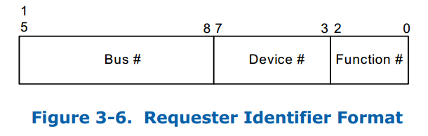
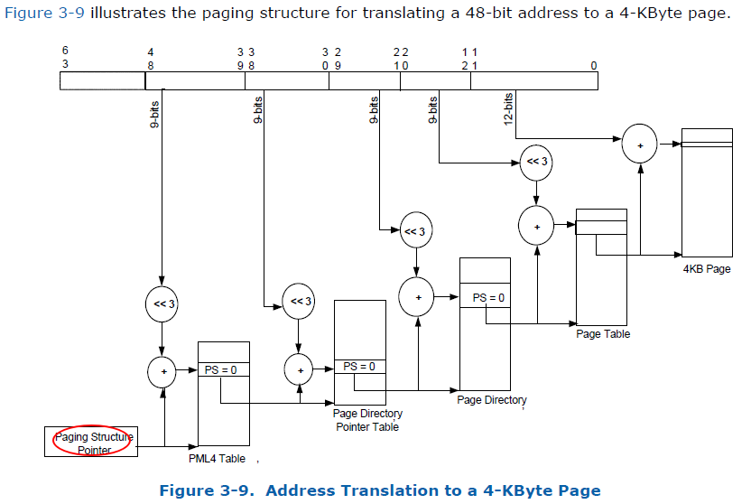

本文主要探讨一下VT-d DMA Remapping机制。在分析DMA Remapping之前回顾下什么是DMA，DMA是指在不经过CPU干预的情况下外设直接访问(Read/Write)主存(System Memroy)的能力。 DMA带来的最大好处是：CPU不再需要干预外设对内存的访问过程，而是可以去做其他的事情，这样就大大提高了CPU的利用率。
在设备直通(Device Passthough)的虚拟化场景下，直通设备在工作的时候同样要使用DMA技术来访问虚拟机的主存以提升IO性能。那么问题来了，直接分配给某个特定的虚拟机的，我们必须要保证直通设备DMA的安全性，一个VM的直通设备不能通过DMA访问到其他VM的内存，同时也不能直接访问Host的内存，否则会造成极其严重的后果。因此，必须对直通设备进行“DMA隔离”和“DMA地址翻译”，隔离将直通设备的DMA访问限制在其所在VM的物理地址空间内保证不发生访问越界，地址翻译则保证了直通设备的DMA能够被正确重定向到虚拟机的物理地址空间内。为什么直通设备会存在DMA访问的安全性问题呢？原因也很简单：由于直通设备进行DMA操作的时候guest驱动直接使用gpa来访问内存的，这就导致如果不加以隔离和地址翻译必然会访问到其他VM的物理内存或者破坏Host内存，因此必须有一套机制能够将gpa转换为对应的hpa这样直通设备的DMA操作才能够顺利完成。
VT-d DMA Remapping的引入就是为了解决直通设备DMA隔离和DMA地址翻译的问题，下面我们将对其原理进行分析，主要参考资料是Intel VT-d SPEC Chapter 3。
1 DMA Remapping 简介
VT-d DMA Remapping的硬件能力主要是由IOMMU来提供，通过引入根Context Entry和IOMMU Domain Page Table等机制来实现直通设备隔离和DMA地址转换的目的。那么具体是怎样实现的呢？下面将对其进行介绍。
根据DMA Request是否包含地址空间标志(address-space-identifier)我们将DMA Request分为2类：
- Requests without address-space-identifier: 不含地址空间标志的DMA Request，这种一般是endpoint devices的普通请求，请求内容仅包含请求的类型(read/write/atomics)，DMA请求的address/size以及请求设备的标志符等。
- Requests with address-space-identifier: 包含地址空间描述标志的DMA Request，此类请求需要包含额外信息以提供目标进程的地址空间标志符(PASID)，以及Execute-Requested (ER) flag和 Privileged-mode-Requested 等细节信息。
为了简单，通常称上面两类DMA请求简称为：Requests-without-PASID和Requests-with-PASID。本节我们只讨论Requests-without-PASID，后面我们会在讨论Shared Virtual Memory的文中单独讨论Requests-with-PASID。
首先要明确的是DMA Isolation是以Domain为单位进行隔离的，在虚拟化环境下可以认为每个VM的地址空间为一个Domain，直通给这个VM的设备只能访问这个VM的地址空间这就称之为“隔离”。根据软件的使用模型不同，直通设备的DMA Address Space可能是某个VM的Guest Physical Address Space或某个进程的虚拟地址空间（由分配给进程的PASID定义）或是由软件定义的一段抽象的IO Virtual Address space (IOVA)，总之DMA Remapping就是要能够将设备发起的DMA Request进行DMA Translation重映射到对应的HPA上。下面的图描述了DMA Translation的原理，这和MMU将虚拟地址翻译成物理地址的过程非常的类似。

值得一提的是，Host平台上可能会存在一个或者多个DMA Remapping硬件单元，而每个硬件单元支持在它管理的设备范围内的所有设备的DMA Remapping。例如，你的台式机CPU Core i7 7700k在MCH中只集成一个DMA Remapping硬件单元(IOMMU)，但在多路服务器上可能集成有多个DMA Remapping硬件单元。每个硬件单元负责管理挂载到它所在的PCIe Root Port下所有设备的DMA请求。BIOS会将平台上的DMA Remapping硬件信息通过ACPI协议报告给操作系统，再由操作系统来初始化和管理这些硬件设备。
为了实现DMA隔离，我们需要对直通设备进行标志，而这是通过PCIe的Request ID来完成的。根据PCIe的SPEC，每个PCIe设备的请求都包含了PCI Bus/Device/Function信息，通过BDF号我们可以唯一确定一个PCIe设备。

同时为了能够记录直通设备和每个Domain的关系，VT-d引入了root-entry/context-entry的概念，通过查询root-entry/context-entry表就可以获得直通设备和Domain之间的映射关系。
Root-table是一个4K页，共包含了256项root-entry，分别覆盖了PCI的Bus0-255，每个root-entry占16-Byte，记录了当前PCI Bus上的设备映射关系，通过PCI Bus Number进行索引。 Root-table的基地址存放在Root Table Address Register当中。Root-entry中记录的关键信息有：
- Present Flag：代表着该Bus号对应的Root-Entry是否呈现，CTP域是否初始化；
- Context-table pointer (CTP)：CTP记录了当前Bus号对应点Context Table的地址。
同样每个context-table也是一个4K页，记录一个特定的PCI设备和它被分配的Domain的映射关系，即对应Domain的DMA地址翻译结构信息的地址。 每个root-entry包含了该Bus号对应的context-table指针，指向一个context-table，而每张context-table包又含256个context-entry， 其中每个entry对应了一个Device Function号所确认的设备的信息。通过2级表项的查询我们就能够获得指定PCI被分配的Domain的地址翻译结构信息。Context-entry中记录的信息有：
- Present Flag：表示该设备对应的context-entry是否被初始化，如果当前平台上没有该设备Preset域为0，索引到该设备的请求也会被block掉。
- Translation Type：表示哪种请求将被允许；
- Address Width：表示该设备被分配的Domain的地址宽度；
- Second-level Page-table Pointer：二阶页表指针提供了DMA地址翻译结构的HPA地址（这里仅针对Requests-without-PASID而言）；
- Domain Identifier: Domain标志符表示当前设备的被分配到的Domain的标志，硬件会利用此域来标记context-entry cache，这里有点类似VPID的意思；
- Fault Processing Disable Flag：此域表示是否需要选择性的disable此entry相关的remapping faults reporting。
因为多个设备有可能被分配到同一个Domain，这时只需要将其中每个设备context-entry项的 Second-level Page-table Pointer 设置为对同一个Domain的引用， 并将Domain ID赋值为同一个Domian的就行了。
2 DMA隔离和地址翻译
VT-d中引入root-table和context-table的目的比较明显，这些额外的table的存在就是为了记录每个直通设备和其被分配的Domain之间的映射关系。 有了这个映射关系后，DMA隔离的实现就变得非常简单。 IOMMU硬件会截获直通设备发出的请求，然后根据其Request ID查表找到对应的Address Translation Structure即该Domain的IOMMU页表基地址， 这样一来该设备的DMA地址翻译就只会按这个Domain的IOMMU页表的方式进行翻译，翻译后的HPA必然落在此Domain的地址空间内（这个过程由IOMMU硬件中自动完成）， 而不会访问到其他Domain的地址空间，这样就达到了DMA隔离的目的。
DMA地址翻译的过程和虚拟地址翻译的过程是完全一致的，唯一不同的地方在于MMU地址翻译是将进程的虚拟地址(HVA)翻译成物理地址(HPA)，而IOMMU地址翻译则是将虚拟机物理地址空间内的GPA翻译成HPA。IOMMU页表和MMU页表一样，都采用了多级页表的方式来进行翻译。例如，对于一个48bit的GPA地址空间的Domain而言，其IOMMU Page Table共分4级，每一级都是一个4KB页含有512个8-Byte的目录项。和MMU页表一样，IOMMU页表页支持2M/1G大页内存，同时硬件上还提供了IO-TLB来缓存最近翻译过的地址来提升地址翻译的速度。
